Karakteristik
Fisik :
- Berbulu tebal
- Memiliki kuku panjang untuk menaiki tembok
- Memiliki kelenjar susu berbulu
- Bertaring
- Sebelum memakan sesuatu mengendus makan itu dahulu sebelum memakannya
- Pup dipasir
- Memiliki satu ekor, berkaki empat, bentuk kuping lancip dan berbulu seperti kemocheng
- Ukuran tubuh bervariasi tergantung pada ras, namun pada umumnya kucing memiliki panjang tubuh hingga 76 cm dan berat tubuh antara 2-4 kg
Perilaku :
- Mendengkur
- Memanjat
- Memiliki refleks meluruskan badannya ketika terjatuh
- Bersahabat
- Aktif
- Suka bermain
- Memiliki rasa keingintahuan tinggi
- Mandiri
- Sering bermalas-malasan
- Memiliki suara dengkuran untuk menghilangkan stres dan memperkuat tulang
Biologis :
- Kucing adalah hewan mamalia karnivora dari keluarga Felidae
- Ada banyak jenis kucing, seperti kucing hutan, kucing liar, dan kucing domestik
- Semua kucing dalam genus ini berbagi nenek moyang yang sama yang mungkin hidup sekitar 6-7 juta tahun yang lalu di Asia
- Kucing berkembang biak dengan cara melahirkan
- Kucing memiliki satu ekor, berkaki empat, bentuk kuping lancip, dan memiliki kelopak mata ketiga yang disebut membrana niktitans
Ukuran :
- Ukuran tubuh kucing bervariasi tergantung pada ras
- Pada umumnya, kucing memiliki panjang tubuh hingga 76 cm dan berat tubuh antara 2-4 kg
Kebersihan :
- Kucing termasuk hewan paling bersih karena sering membersihkan tubuhnya dengan jilatan air liurnya
- Kucing mandi dengan menjilat tubuhnya sendiri untuk membersihkan bulu dan menghilangkan sel kulit mati
Perawatan
Bulu
- Menyisir bulu kucing secara teratur untuk menghilangkan bulu mati dan kotoran yang menempel pada bulu
- Memberikan makanan yang sehat dan bergizi untuk menjaga kesehatan bulu kucing
- Memberikan suplemen omega-3 untuk menjaga kelembaban dan kilau bulu kucing
- Memberikan perawatan khusus seperti shampoo dan conditioner untuk menjaga kebersihan dan kesehatan bulu kucing
Kuku
- Memotong kuku kucing secara teratur untuk mencegah kuku tumbuh terlalu panjang dan melukai kucing atau merusak perabotan rumah
- Memberikan papan gores atau tiang gores untuk memfasilitasi kucing mengasah kuku
Gigi
- Menyikat gigi kucing secara teratur untuk mencegah terjadinya masalah gigi dan mulut pada kucing
- Memberikan makanan khusus yang dapat membantu membersihkan gigi kucing
Telinga
- Membersihkan telinga kucing secara teratur untuk mencegah terjadinya infeksi telinga pada kucing
- Memberikan perawatan khusus seperti tetes telinga untuk menjaga kebersihan telinga kucing
Mata
- Membersihkan mata kucing secara teratur untuk mencegah terjadinya infeksi mata pada kucing
- Memberikan perawatan khusus seperti tetes mata untuk menjaga kesehatan mata kucing
Kesehatan
- Memberikan vaksinasi dan obat cacing secara teratur untuk menjaga kesehatan kucing
- Membawa kucing ke dokter hewan secara teratur untuk pemeriksaan kesehatan dan perawatan medis jika diperlukan
Galeri
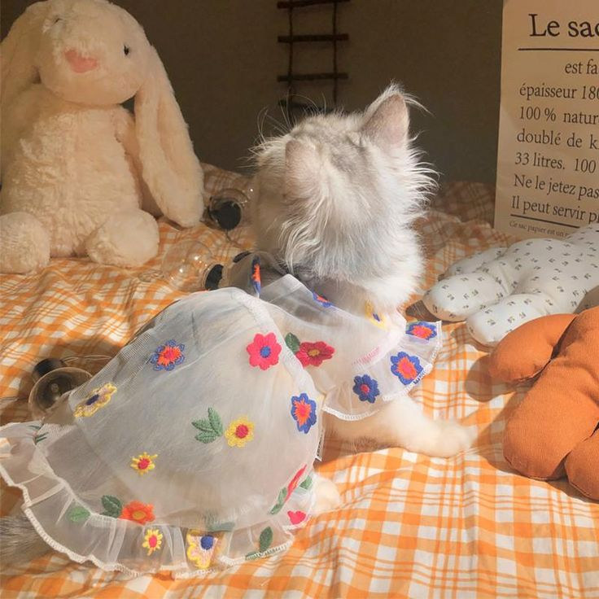
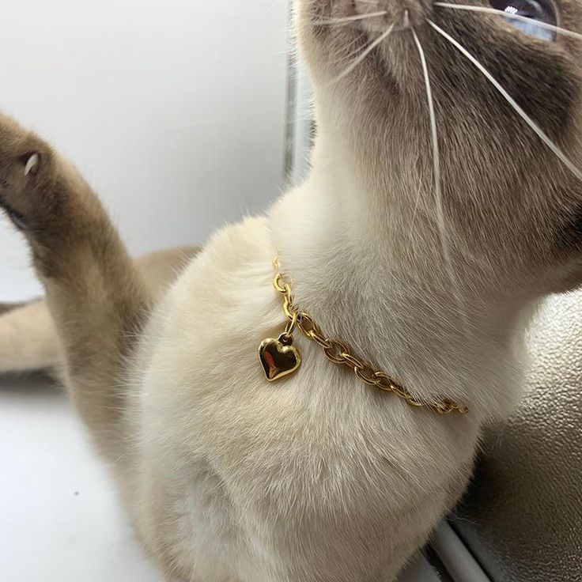
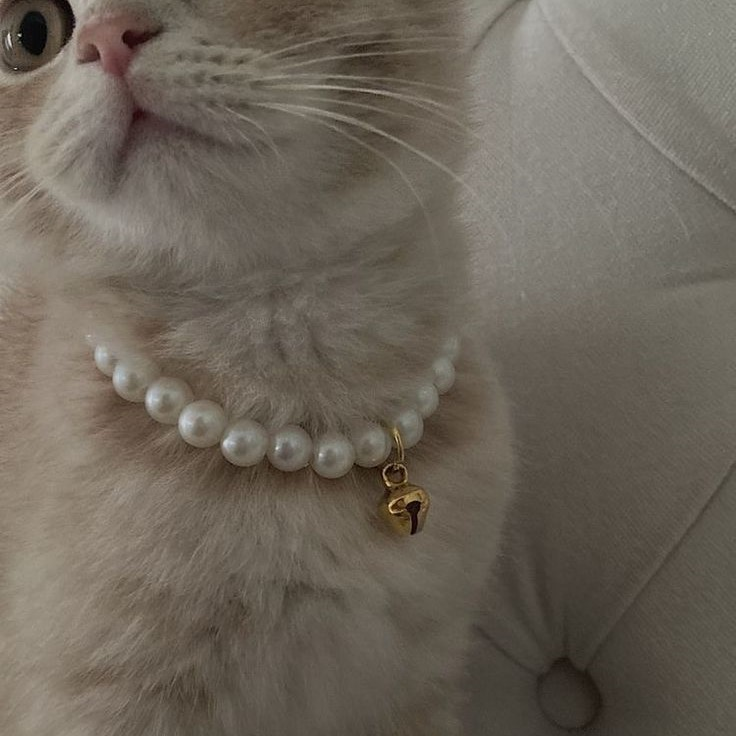
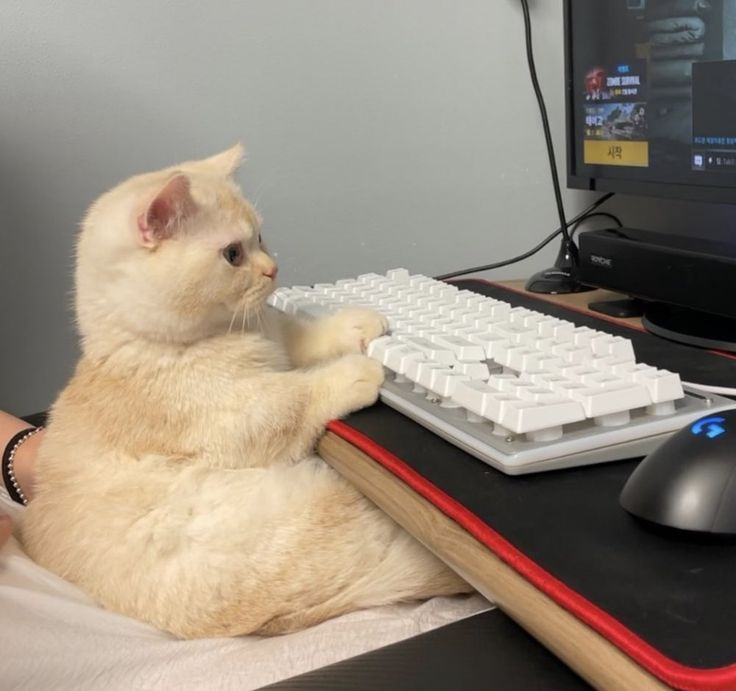
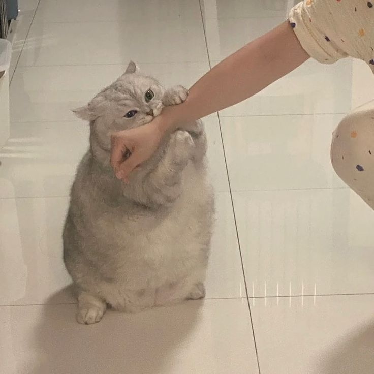
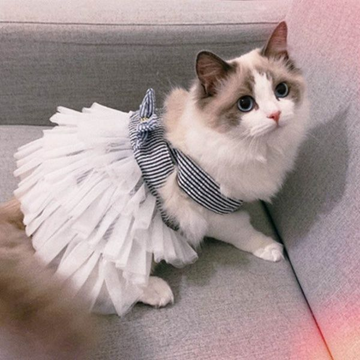
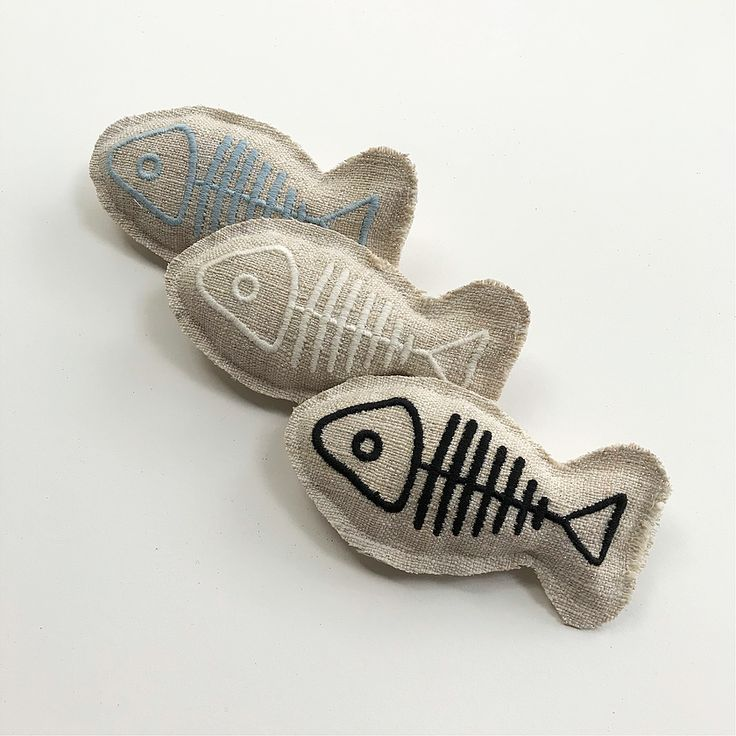
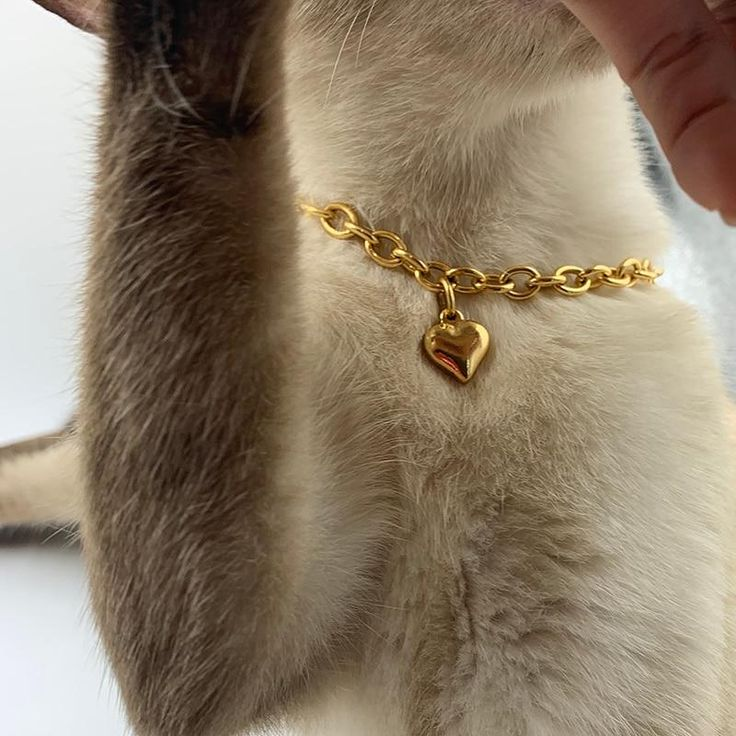
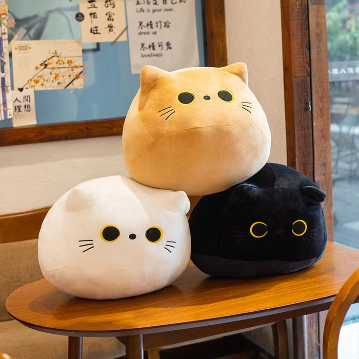
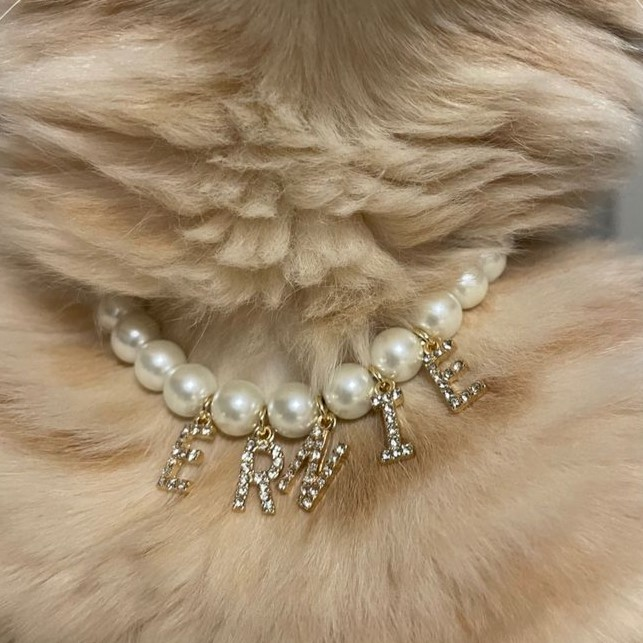
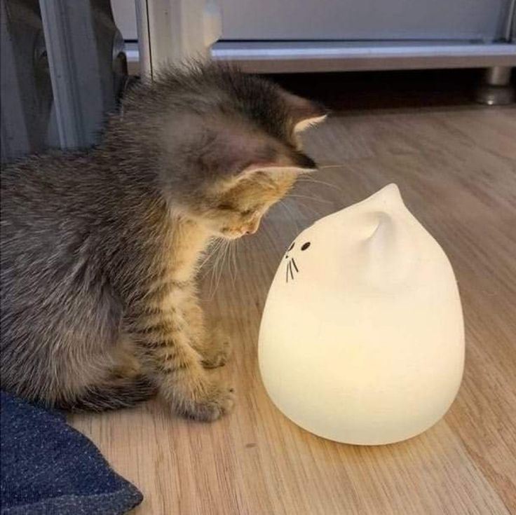